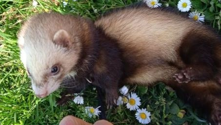

Le saviez-vous ?

Retour à l'accueil
Présentation des furets
leur histoire
leur alimentation
leur environnement
leur éducation
Leur santé
législation
l'adoption du furet
Le furet a été domestiqué avant la domestication du chat.
Pout Pout